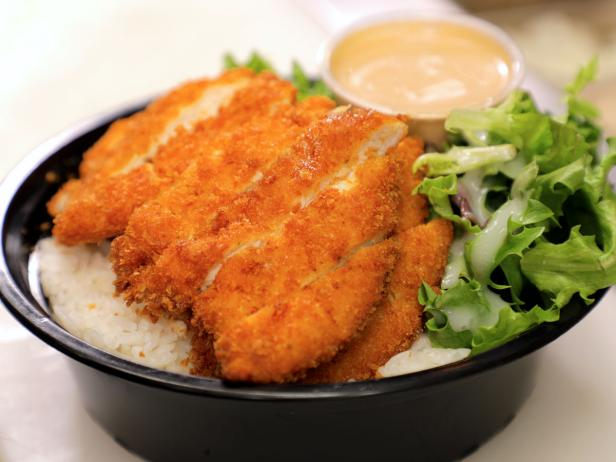

Chicken Katsu

Description
This is a recipe for Chicken Katsu - Japanese style fried chicken.
Can also be used to make Tonkatsu, just use pork cutlets instead of chicken.
Serve with white rice and tonkatsu sauce.
Ingredients
- 4 skinless, boneless chicke breast halves - pounded
to 1/2 inch thicknets.
- Salt and pepper to taste
- 2 tablespoons all-purpose flour
- 1 egg beaten
- 1 cup panko bread crumbs
- 1 cup oil for frying, or as needed
Steps
- Season chicken breasts on both side with salt and pepper.
- Place the flour, egg and panko crumbs into separate shallow dishes.
- Coat the chicken breast in flour, shaking off any excess.
- Dip them into the egg, and then press into the panko crumbs until well coated on both sides
- Heat 1/4 inch of oil ina large skillet over medium-high heat.
- Place chicken in the hot oil, and cook 3 or 4 minutes perside, or until golden brown